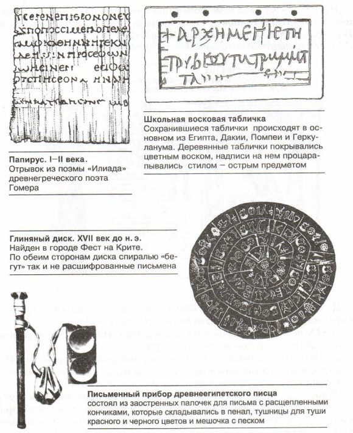
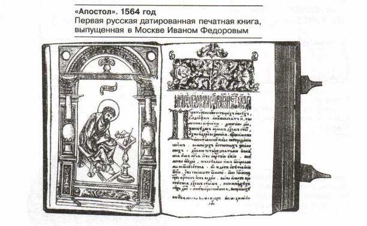
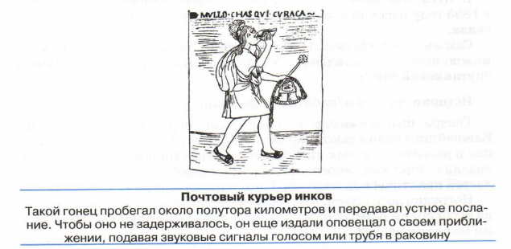
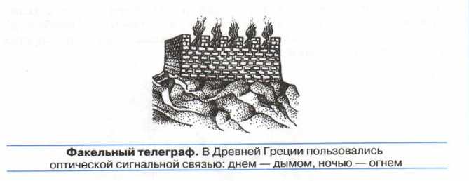
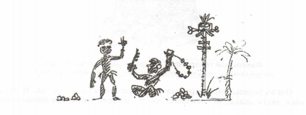
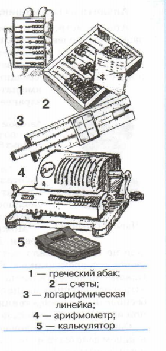
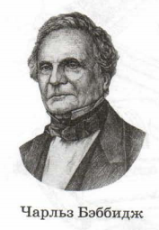

"§22 Предыстория информатики"
Основные темы параграфа:
= история средств хранения информации;
= история средств передачи информации;
= история средств обработки информации
= аналитическая машина Бэббиджа — предшественница ЭВМ
= коротко о главном
= вопросы и задания
В любой деятельности человек всегда придумывал и создавал самые разнообразные средства, приспособления,
орудия труда. Все это облегчало труд, делало его производительнее, расширяло возможности людей. Известно,
что история материального производства и мировой науки тесно связана с историей развития орудий труда.
Первые вспомогательные средства для работы с информацией появились много позже первых орудий материального
труда. Историки утверждают, что расстояние во времени между появлением первыхинструментов для физического
труда (топор, ловушка для охоты) и инструментов для регистрации информационных образов (на камне,кости)
составляет около миллиона лет!
Следовательно, большую часть времени существования человека на Земле труд носил только материальный
характер.
Уже говорилось о том, что информационную деятельность человека можно разделить натри составляющие:
хранение, передачу и обработку. Долгое время средства информационного труда развивались отдельно по этим
трем направлениям.
История средств хранения информации
История хранения информации в письменной форме уходит в глубь веков. До наших дней в некоторых местах
сохранились наскальные письмена древнего человека, выполненные 25-20 тысяч лет назад; лунный календарь,
выгравированный на кости 20 тысяч лет назад. Для письма также использовались дерево, глина. Многие века
письменные документы составлялись на пергаментных свитках. Это было «очень дорогим удовольствием».
Пергамент делался из кожи животных. Ее растягивали, чтобы получить тонкие листы. Когда на востоке
научились ткать шелк, его стали использовать не только для одежды, но и для письма.

Во II веке нашей эры в Китае изобрели бумагу. Однако до Европы она дошла только в XI веке. Вплоть до XV
века письма, документы, книги писались вручную. В качестве инструмента для письма использовались кисточки,
перья птиц, позже — металлические перья; были изобретены краски, чернила. Книг было очень мало, они
считались предметами роскоши.
В середине XV века немецкий типограф Иоганн Гутенберг изобрел первый печатный станок. С этого времени
началось книгопечатание. На Руси книгопечатание основал Иван Федоров в середине XVI века. Книг стало
значительно больше, быстро росло число грамотных людей.

До сегодняшнего дня лист бумаги остается основным носителем информации. Ноу него появились серьезные
«конкуренты».
В XIX веке была изобретена фотография. Носителями видеоинформации стали фотопленка и фотобумага.
В 1895 году французы братья Люмьер продемонстрировали в Париже первый в мире кинофильм, используя аппарат
собственного изобретения. Этот год считается годом рождения кино.
История технических средств хранения и воспроизведения звука начинается с 1877 года. В этом году в США
Томас Эдисон создал фонограф. Звук механическим способом — с помощью записывающей иглы — наносился на
поверхность вращающегося барабана, покрытого воском. Немного позднее был создан механический граммофон,
а затем его портативный вариант — патефон, воспроизводящие звук, записанный на целлулоидной грампластинке.
Электрический аналог патефона — электрофон был изобретен в ХХ веке. В ХХ веке был изобретен магнитофон. И
совсем недавно на магнитную ленту научились записывать не только звук, но и изображение: появился
видеомагнитофон.
История средств передачи информации
Первоначально люди пользовались лишь средствами ближней связи: речью, слухом, зрением. Затем появилось
первое средство дальней связи — почта, чему немало способствовало развитие письменности.

Для быстрой передачи каких-то важных сведений часто использовались оригинальные идеи. Известно, например,
применение на Кавказе костровой связи. Два костровых сигнальщика находились на расстоянии прямой видимости
на возвышенных местах или башнях. Когда приближалась опасность (нападали враги), сигнальщики, зажигая
цепочку костров, предупреждали об этом население.В XVIII веке возник семафорный телеграф — это тоже световая
связь, но технически более совершенная.

Очень богатым на открытия в области связи был ХХ век. В этом веке люди овладели электричеством, которое
породило множество изобретений. Сначала П. Л. Шиллинг в России в 1832 году изобрел электрический телеграф.
А в 1837 году американец С. Морзе создал электромагнитный телеграфный аппарат и придумал специальный
телеграфный код — азбуку, которая носит его имя.
В 1876 году американец А. Белл изобрел телефон. И наконец, в 1895 году русский изобретатель А. С. Попов
открыл эпоху радиосвязи.
Самым замечательным изобретением ХХ века в области связи можно назвать телевидение. Освоение космоса привело
к созданию спутниковой связи.
История средств обработки информации
Теперь познакомимся со средствами обработки информации. Важнейшим видом такой обработки являются вычисления.
Появление и развитие счетных инструментов стимулировали развитие земледелия, торговли, мореплавания, астрономии
и многих других областей практической и научной деятельности людей.
Нетрудно догадаться, что первым счетным средством для человека были его пальцы. Этот инструмент всегда ‹под рукой»!
Кто из вас им не пользовался?
Вот как описывает пальцевой счет туземцев Новой Гвинеи знаменитый русский путешественник Н. Н. Миклухо-Маклай:
«...папуас загибает один за другим пальцы руки, причем издает определенный звук, например "бе, бе, бе"... Досчитав
до пяти, он говорит "ибон-бе" (рука). Затем он загибает пальцы другой руки, снова повторяет "бе,
бе”... пока не дойдет до "ибон али" (две руки). Затем он идет дальше, приговаривая "бе, бе”... пока не дойдет до
"самба-бе" и "самба-али” (одна нога, две ноги). Если нужно считать дальше, папуас пользуется пальцами рук и ног кого-
нибудь другого».

 В V веке до нашей эры в Греции и Египте получил распространение абак.
«Абак» — это греческое слово, котороепереводится как «счетная доска».
Вычисления на абаке производились перемещением камешков по желобам на
‘мраморной доске.
Подобные счетные инструменты распространялись и развивались по всему
миру. Например, китайский вариант абака назывался суан-пан. «Потомком»
абака можно назвать и русские счеты. В России они появились на рубеже
XVI-XVII веков. До недавнего времени они активноиспользовались,
преимущественно в торговле.
В начале XVII века шотландский математик Джон Непер ввел понятие
логарифма, опубликовал таблицы логарифмов. Затем в течение двух веков
развивались вычислительные инструменты, основанные на использовании
этой математической функции. Логарифмы позволяют свести трудоемкие
арифметические операции — умножение и деление — к более простым —
сложению и вычитанию. В результате появилась логарифмическая линейка.
Этот инструмент до недавнего времени был вычислительным средством
инженеров. И лишь ближе к концу ХХ столетия его вытеснили
электронные калькуляторы.
В 1645 году французский математик Блез Паскаль создал первую счетную
машину. Машина Паскаля позволяла быстро выполнятьсложение многозначных
чисел.
Немецкий ученый Лейбниц, развив идею Паскаля, создал механический
арифмометр, на котором можно было выполнять все четыре арифметические
операции с многозначными числами. Позднее арифмометр многократно
совершенствовался, в том числе и русскими изобретателями П. Л.
Чебышевым и В. Т. Однером.
Арифмометр был предшественником современного калькулятора —
маленького электронно-вычислительного устройства. Сейчас практически у каждого
школьника есть калькулятор, который помещается в кармане. Любому академику начала ХХ века такое устройство показалось бы
фантастическим.
Аналитическая машина Бэббиджа — предшественница ЭВМ
Арифмометр, как и простой калькулятор, — это средство механизации вычислений. Человек, производя вычисления на таком
устройстве, сам управляет его работой, определяет последовательность выполняемых операций. Мечтой изобретателей вычислительной
техники было создание считающего автомата, который бы без вмешательства человека производил расчеты по заранее составленной
программе.

Автором первого проекта вычислительного автоматабыл профессор Кембриджского университета Чарльз Бэббидж
В период между 1820 и 1856 годами Бэббидж работал над созданием программно управляемой
Аналитической машины. Это было настолько сложное механическое устройство, что проект так и не был
реализован.
Чарльз Бэббидж Можно сказать, что Бэббидж опередил свое время. Для осуществления его
проекта в ту пору еще не существовало подходящей технической базы. Некоторым ученым современникам
Бэббиджа его труд казался бесплодным. Однако пророчески звучат сейчас слова самого Чарльза Бэббиджа:
«Природа научных знаний такова, что малопонятные и совершенно бесполезные приобретения сегодняшнего
дня становятся популярной пищей для будущих поколений».
Основные идеи, заложенные в проекте Аналитической машины, в нашем веке были использованы конструкторами ЭВМ. Всеглавные
компоненты современного компьютера присутствовали в конструкции Аналитической машины: это склад (в современной терминолотии — память),
где хранятся исходные числа и промежуточные результаты; мельница (арифметическое устройство), в которой осуществляются операции над числами,
взятыми из склада; контора(устройство управления), производящая управление последовательностью операций над числами соответственно заданной программе;
блоки ввода исходных данных и печати результатов.
Для программного управления Аналитической машиной использовались перфокарты — картонные карточки с пробитыми в них
отверстиями (перфорацией). Перфокарты были изобретены в начале
XIX века во Франции Жозефом М. Жаккардом для управления работой автоматического ткацкого станка.
Интересным историческим фактом является то, что первую программу для машины Бэббиджа в 1846 году написала Ада Лавлейс —
дочь великого английского поэта Джорджа Байрона.
Аналитическая машина Бэббиджа — это уже универсальное
средство, объединяющее обработку информации, хранение информации и обмен исходными данными и результатами с человеком.
Коротко о главном
‾‾‾‾‾‾‾‾‾‾‾‾‾‾‾‾‾‾‾‾‾‾‾‾‾‾‾‾‾‾‾‾‾‾‾‾‾‾‾‾‾‾
1. Важнейшие этапы развития средств хранения информации (до
изобретения компьютера):
•изобретение бумаги в Китае — II век;
•изобретение печатного станка — XV век, И. Гутенберг;
•изобретение фотографии, кино, фонографа — ХХ век;
•изобретение магнитных носителей информации — ХХ век.
2. Важнейшие изобретения технических средств передачи информации (до изобретения компьютера):
•телеграф — первая половина ХХ века, П. Л. Шиллинг, С. Морзе;
•телефон — вторая половина ХХ века, А. Белл;
•радио — конец ХХ века: А. С. Попов, Г. Маркони;
•телевидение — ХХ век.
3. Важнейшие изобретения технических средств обработки инфор-
мации (до изобретения компьютера):
•машина Паскаля, механический калькулятор Лейбница —
XVII век;
•Аналитическая машина — начало ХХ века, Ч. Беббидж;
•механический арифмометр — конец ХХ века, В. Т. Однер;
•электрический калькулятор — ХХ век.
Вопросы и задания
‾‾‾‾‾‾‾‾‾‾‾‾‾‾‾‾‾‾‾‾‾‾‾‾‾‾‾‾‾‾‾‾‾‾‾‾‾‾‾‾‾‾‾‾‾‾
1. Какие средства хранения информации были первыми?
2. Когда появилось книгопечатание, кто его изобретатель?
3. Какие средства хранения информации изобретены в ХIХ-ХХ вв.?
4. Назовите основные технические средства передачи информации в хронологической последовательности их изобретения.
5. Перечислите основные вычислительные средства в хронологической
последовательности их изобретения.
6. Кто, когда и где разработал первый проект автоматической вычислительной машины?
7. Какое влияние проект Аналитической машины оказал на дальнейшее
развитие вычислительной техники?
8. Подготовьте презентацию по одной из тем заданий 1-7.
Тест по §22 |